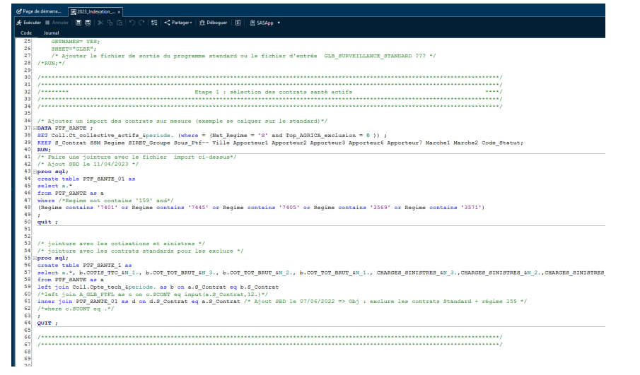
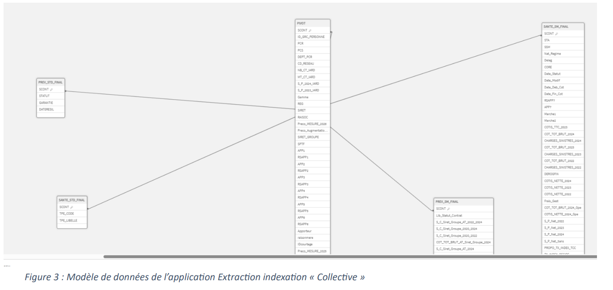
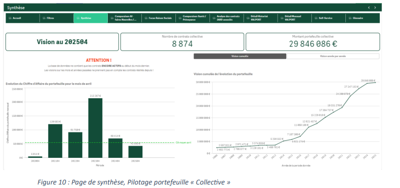

Lors de mon stage de 3 mois chez Groupama Loire-Bretagne, j’ai intégré le service Data, au sein de l'équipe décisionnelle. Ma mission principale consistait à migrer des traitements SAS vers Qlik Sense pour le portefeuille « Collective », en lien avec les contrats santé et prévoyance des entreprises.
J’ai d’abord analysé des programmes SAS existants (exemple ci-dessus) et leurs requêtes SQL, que j’ai ensuite traduits en scripts Qlik. J’ai ainsi créé une première application Qlik, permettant d'automatiser le processus d'obtention des fichiers excel regroupant l’ensemble des informations nécessaires à la Direction Assurance.
Ensuite, j’ai conçu une application de pilotage à destination des différentes direction métiers de Groupama. Elle comprend 11 pages (filtres, suivi mensuel, analyse par entreprise, etc.). Voici la page "Synthèse" qui représente
